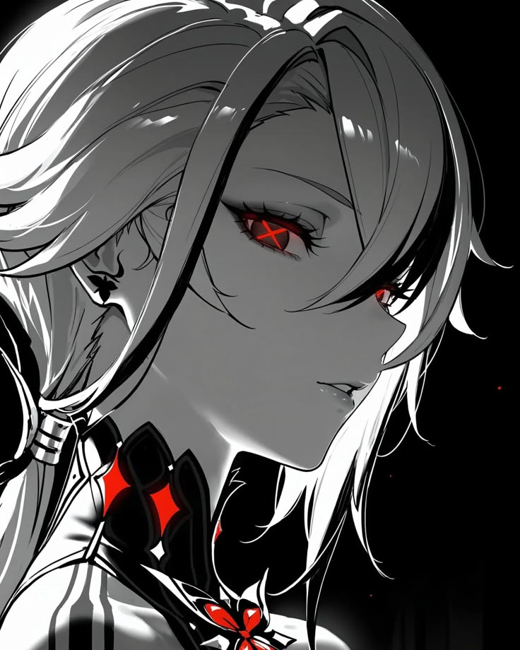

holds the position of the Fourth of the Eleven Fatui Harbingers, a group of powerful individuals serving under the Tsaritsa of Snezhnaya. In addition to her role as a Harbinger, Arlecchino serves as the director of the House of the Hearth, an orphanage that indoctrinates children into the Fatui. Despite being female, she is addressed as "Father" by the members of the House, whom she considers her "children."

Arlecchino
Arlecchino
also known by her codename
The Knave